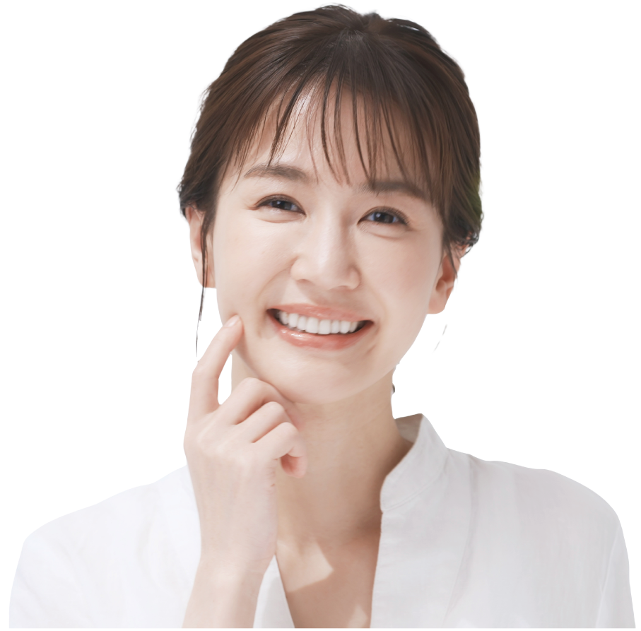
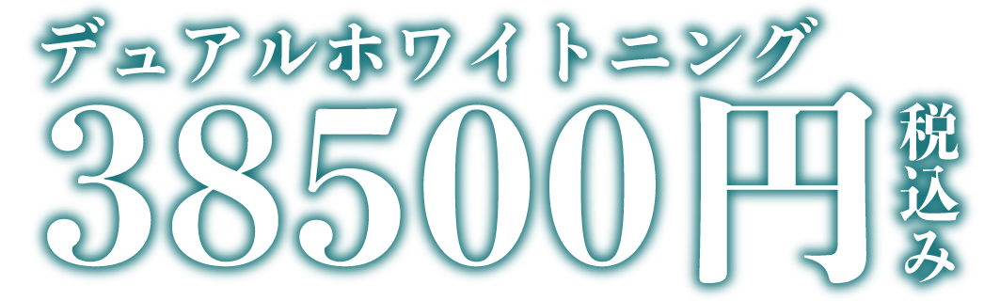

当院では皆様に安心してご来院頂けるよう新型コロナウイルス感染対策を徹底しております。
全員がマスク着用、飛沫防止の徹底、院内は徹底的にアルコール消毒。万全の体制にてにて診療に当たっております。どうぞご安心してお気軽にご予約ください。


歯医者でしかできないホワイトニング

本当に歯を白くするためには葉の汚れを落とすだけでは不十分で、漂白をする必要があります。ただし歯の漂白を行うホワイトニングはは医療行為にあたるため、歯科医院でしか施術できません。歯科医師・歯科衛生士が行うが行うオーシャンズにお任せください
有資格者による施術

きちんとしたホワイトニングをする際には虫歯やクラックなどの事前診断が必要です。当院では歯科医師が事前相談の上で、歯科医師または歯科衛生士が施術を行いますので、全てお任せください。
好みに合わせて選べる３つのコース
当院ではホームホワイトニング・オフィスホワイトニング・デュアルホワイトニングの２つと、その２つを合わせたデュアルホワイトニングを提供しております。好みやライフスタイルに合わせてお選びいただけます。

ホームホワイトニングとは、ご自宅でできるホワイトニングです。歯医者で作成したマウスピースにホワイトニングジェルを入れ、1日30分〜2時間ほど装着することでことで、歯を白くする方法のことです。「歯を白くしたいけど歯医者通うのは苦手...」という方には、ホームホワイトニングがおすすめです。

オフィスホワイトニングとは、歯科医師や歯科衛生士など歯医者さんで行うホワイトニングホワイトニングのことです。自宅で行うホームホワイトニングよりも漂白力の高い薬剤と光の照射により歯を外側から白くします。1回の施術で効果が出やすいため、急な結婚式やデート、大事なお仕事に最適です。

歯を内側から白くする「ホームホワイトニング」、歯の外側から白くする「オフィスホワイトニング」、この2種類のホワイトニングを同時に行うのがデュアルホワイトニングです。ホームホワイトニング・オフィスホワイトニングどちらか一方の施術に比べて、デュアルホワイトニングは最も短期間で効果的に効果的に白さを実感でき、効果も長続きします。「芸能人のような白い歯が理想」とお考えの方に最もオススメできるホワイトニングが、このデュアルホワイトニングです。

スタッフ紹介
オーシャンズの歯科衛生士